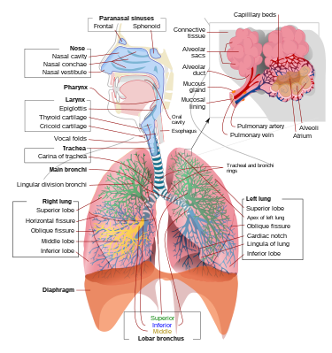
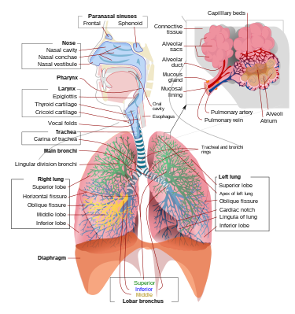
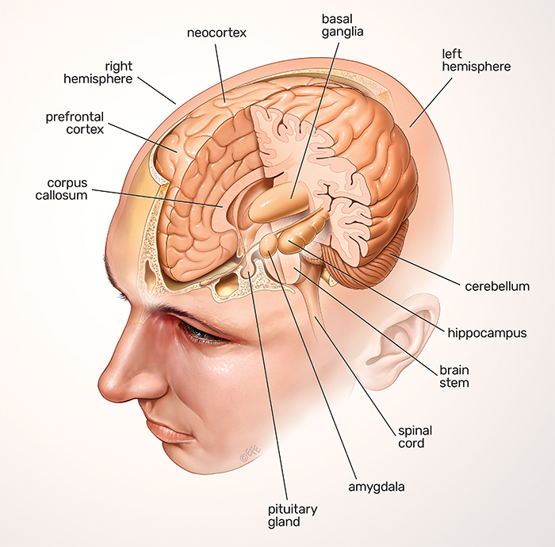
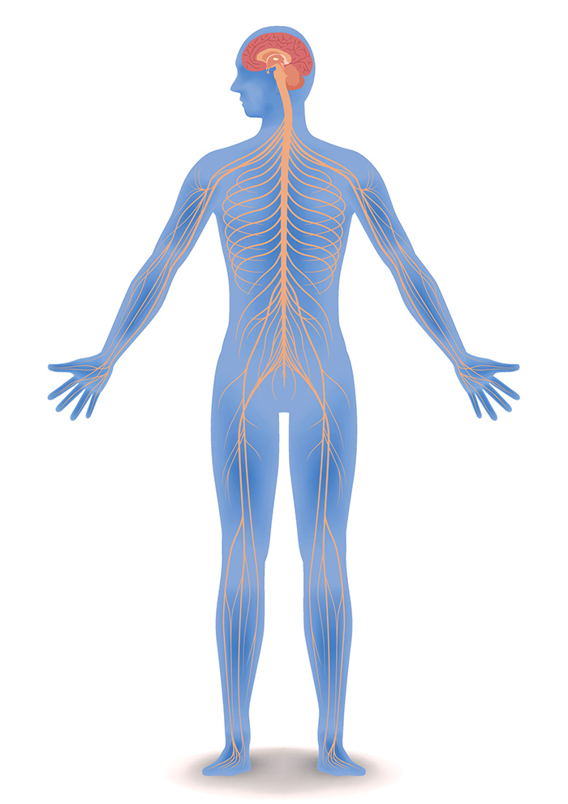

Different body system
- Respiratory system
- These are organs and tissues used for breathing .
- such organs include the lungs and heart
- Reproductive system
- The reproductive system are responsible creating offsprings.
- these are made up of cervix , uterus ,testis , etc
- Central nervous system
- These controls how we think and feel
- the Central nervous system is made up brain and spinal cord \
 


 